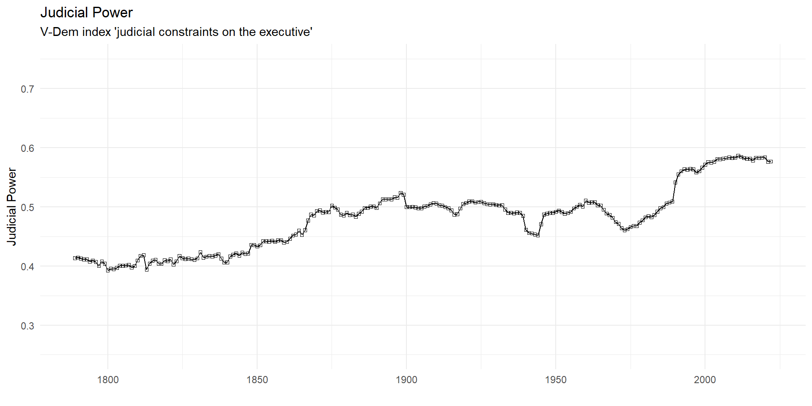
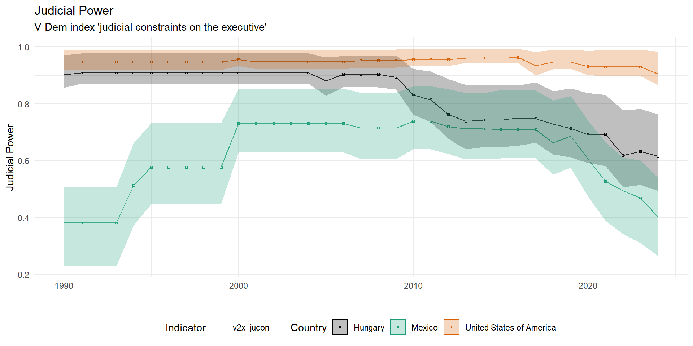

Judicial Power and Independence
Week 4
Who cares about courts?
it is commonly assumed that court rulings must be complied with and followed by affected actors in virtually all constitutional systems
but what are the sources of this judicial power? why and when does anyone listen to courts?
Concept of judicial power
following Staton and Moore (2011), we can usefully identify two pillars of judicial power:
autonomy – or independence in a strict sense – or the extent to which judges’ decisions reflect their true preferences as opposed to someone else’s
effectiveness – or compliance – or the extent to which courts can compel actors to comply with adverse decisions
Concept of judicial power
| High Effectiveness | Low Effectiveness | |
| High Autonomy | Powerful Court | Ignorable Court |
| Low Autonomy | Puppet Court | Joke Court |
Judicial power in comparative perspective
Judicial power in comparative perspective
Why give courts power?
at the most abstract level the creation and maintenance of a powerful judiciary has been argued to be about credible commitments
by empowering actors (i.e. courts) outside their direct and immediate control, governments signal willingness to be bound by constitutional rules (e.g. respecting property rights) (North and Weingast 1989)
- in the international context, governments signal commitment to jointly negotiated rules (e.g. treaties)
Why empower courts in autocracies?
authoritarian regimes want to keep low-level corruption in check
courts can share the blame for unpopular policies (Ginsburg and Moustafa 2008)
independent enforcement of property rights as a credible commitment to investors
courts are useful for controlling opposition movements
courts can provide regime-friendly interpretations of the law, including the constitution
Insurance theory of court power
empowering courts comes at a cost to executives and legislators
courts are more stable than governments – empowering courts can insure incumbents against loss of power (Finkel 2005)
powerful courts can make it harder to change policy direction
they can also help protect former leaders and their assets
1994 judicial reform in Mexico
after winning elections in 1994 president Ernesto Zedillo decided to make the Mexican judiciary more independent and powerful – why?
Finkel (2005) explains this counterintuitive move as a form of insurance policy
the ruling Institutional Revolutionary Party was losing support and anticipated loss of power
the reform gave the Mexican Supreme Court more power to circumscribe (federal and state) government policy
1994 judicial reform in Mexico
Ernesto Zedillo during his presidency
What makes judges autonomous?
judicial independence is the single most important attribute associated with modern judiciaries
yet there is disagreement on the precise content of this concept
independence to do what? independence from what or whom?
Judicial independence
the degree to which judges actually decide cases in accordance with their own determinations of the evidence, the law and justice, free from the coercion, blandishments, interference, or threats from governmental authorities or private citizens. (Rosenn 1987, 8)
What is(n’t) judicial independence
can a judge be independent when the judiciary as a whole isn’t?
does “dependence” on another judge’s or court’s decision undermine judicial independence?
What is(n’t) judicial independence
what about anticipatory judicial behaviour?
- a court may self-censor if it knows the government is likely to override its decision
free from “governmental authorities or private citizens”
rulings based on “own determinations of … the law” vs “the law”
De jure vs de facto independence
many scholars distinguish between “paper” or institutional guarantees of independence and what happens in practice (Melton and Ginsburg 2014; Hayo and Voigt 2007)
the most common de jure guarantees are:
- commitment to judicial independence, life tenure, depoliticized selection procedure, constrained removal procedure, salary non-regression
De jure vs de facto independence
there is mixed evidence on the importance of de jure guarantees of independence on de facto levels
Stiansen (2022) shows that removing re-appointment opportunities made ECtHR judges more likely to rule against the country which nominated them
De jure vs de facto independence
there is doubt whether judicial autonomy can be measured in isolation due to anticipation effects
- judges’ decisions are affected by the likelihood of compliance (Linzer and Staton 2015)
Harvey (2022) suggests to focus on contextualizing de facto independence
- e.g. ruling-party incentives to intervene can vary based on circumstances
Judicial independence in Francoist Spain
Toharia (1975) documents that in the authoritarian Spain of the 1970s, judges held diverse opinions different from the regime
ordinary judges were by and large insulated from threat of removal or punishment by the government
however, the regime interfered with independence in politically sensitive cases by creating and staffing a host of special tribunals
Judicial independence in Francoist Spain
General Franco ruled Spain until 1975
Public support as a source of judicial power
one reason why courts’ autonomy and effectiveness can be high is public support (Carrubba and Zorn 2010)
in general, people hold courts in high regard (Vanberg 2015)
- this is helped by the fact that courts are often responsive to public preferences (Mishler and Sheehan 1993)
attacking courts and non-compliance is usually politically costly
How can courts increase their power?
new courts consolidate power by not antagonizing the government for an initial period
expand jurisdiction through broad interpretation of access rules and legal domains
a common strategy is to first create the power-expanding principle without applying it in the initial case to mitigate costs of compliance
References

POLS0113: Judicial Politics